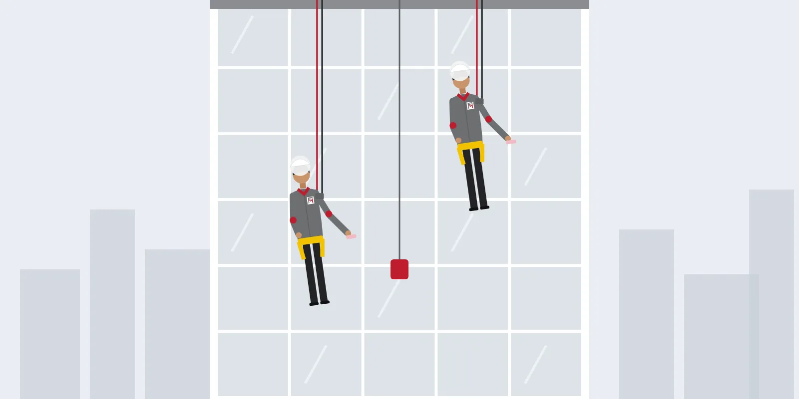

Glass & Facade Cleaning
High-Rise Window Cleaning in Doha and Across Qatar

Doha's towers are built with large areas of glass, and in Qatar that glass gets dusty fast. Clean windows let in more light, look better to tenants and visitors, and show that a building is well looked after. JAFM Qatar provides high-rise window cleaning in Doha, Lusail, West Bay and across Qatar, with every job planned around safety at height. We have worked in facility management since 1977 and hold ISO 9001, ISO 14001 and ISO 45001 certification, certified by TNV.
How high-rise windows are cleaned
The right access depends on the building's height, shape and equipment. After a survey, we choose the safest method for each elevation:
- BMU or gondola: many towers have a building maintenance unit on the roof. It is usually the quickest way to clean large, flat curtain walls, once we have checked that it is certified and has been maintained.
- Rope access: trained technicians descend on two independent ropes. It suits buildings without a BMU, curved or stepped facades, and areas the BMU cannot reach.
- Mobile elevating work platforms (MEWP): boom lifts and scissor lifts for lower floors, podiums, canopies and atriums.
- Water-fed poles: purified water through extendable poles for ground and low-level glass, cleaned from the ground.
Safety comes first
Work at height is planned in writing before anyone goes over the edge. On every high-rise job:
- A written risk assessment, method statement and rescue plan
- Anchor points and BMU checked before use
- Barriered exclusion zones at ground level, with a marshal
- All tools and buckets tethered
- Wind speed checked at working height, and work stopped for high wind, sandstorms, rain or lightning
- Supervision on site throughout the work
What we clean
- External windows and curtain walls
- Window frames, mullions and sills
- Skylights, glass roofs and atriums
- Glass balustrades and balconies
- Spandrel panels and cladding next to the glass
- Internal high-level glass in lobbies and atriums
How it works, step by step
- Request a quote. Tell us the building, its height and how many elevations need cleaning.
- Site survey. We check the glass, anchor points, BMU, roof access and ground-level restrictions.
- Method statement and quote. You receive the access method for each elevation, the safety plan and the price.
- Schedule. Work is planned around tenants, weather and wind, usually starting early in the morning.
- Cleaning. Each drop or BMU run is cleaned top to bottom, with a supervisor on site.
- Handover. We check the finished elevations with you and report any damaged seals, cracked glass or other issues.
How often should high-rise windows be cleaned?
Towers near the coast, main roads or construction sites usually need more frequent cleaning. The cooler months from October to April are the busiest, so it helps to book early.
What affects the price
- 1Building height and glass area
- 2The access method: BMU, rope access or MEWP
- 3How many elevations and drops are needed
- 4How dirty the glass is, and any hard-water stains
- 5Permits, working-hour limits and ground-level restrictions
- 6One-off cleaning or an annual contract
We offer a free survey and a written quote, so you know the full cost before work starts.
Areas we serve
We clean high-rise windows across Qatar, including West Bay, Lusail, The Pearl, Al Dafna, Msheireb, Al Sadd and Al Wakrah.
Frequently asked questions
Is rope access safe?
Yes, when it is properly planned. Technicians use two independent ropes, every job has a written rescue plan, and work stops in high wind or bad weather.
Our building has no BMU. Can you still clean the windows?
Yes. Rope access is used for most buildings without a BMU, and mobile platforms for lower floors.
Do residents or tenants need to do anything?
We give you a notice to share in advance. It usually asks people to keep balconies clear and windows closed while the team works on their elevation.
How long does a tower take to clean?
It depends on the height, the glass area and the weather. A mid-size tower may take a few days, and a large tower a week or more. We give you a timeline in the quote.
Do you clean windows inside as well as outside?
Yes. Internal glass, including high-level lobby and atrium glass, can be cleaned at the same time.
Book high-rise window cleaning
Fill in the quote form on jafmqatar.com to book a free survey and receive a written quote. You can also call us on +974 4444 1416, or visit our office at Office 504B, 5th Floor, Al Bustaan Center, Al Sadd, Doha.